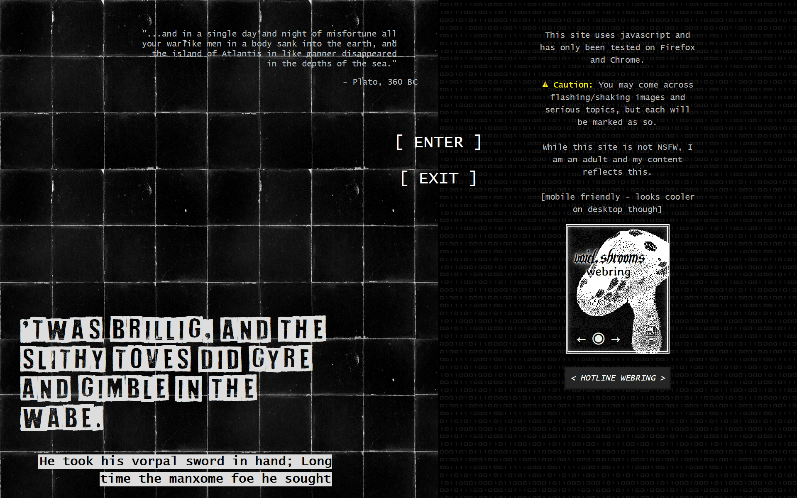

I like changing my layouts frequently and evolving my site to follow where I am in my webweaving journey, but I don't want to lose what it used to look like, so, layout archive!
dec 2023 to present
This new splash/landing page was inspired by alternative magazine spreads and scrapbooking. I wanted to fit more info/quotes on the screen without the user having to scroll, so it would all be visible upon loading the page, so I widened the content container to fill the whole screen rather than the narrow column it previously had.

nov 9, 2023 to present
various themes
Current theme! I felt bored with my last layout and wanted to do something that felt more interactive and reminiscent of "old web", so I made the old boxes of content into draggable 'windows' that you could open and close and the overall layout is supposed to mimic a desktop. I stuck with the old window styles with the outset borders and everything, but went with more modern color schemes and fun themes rather than the traditional windows grey and blue. (If you have a favorite theme, lmk bc I love to know those things >:) ).
In much contrast to my last layout, I wanted this one to feel more exploratative, where you only get the important stuff, or the basics, at face value and you have to go searching if you wanted to find other fun stuff. Scavenger hunt. I like that there's less stuff on the page, and things feel more confined against the mostly empty background, so it feels more expanse-y and void. But, you could quickly clutter the screen with the navigation 'windows' if you wanted to. Plus, since you can drag and open/close every 'window', you can really customize how you want my home page to look: super busy and cluttered? minimal? busy but organized in neat columns? Sometimes I just sit around and drag the 'windows' around mindlessly for fun. Also, with the super simple theme-switching script I'm using, it's stupid easy to make new themes so I think I might get a little silly and go nuts with how many different themes I make from now on. Expect more, as of Nov 11, 2023.
october 2023 to nov 9, 2023
various themes
With this layout I tried making things as intuitive and easy-to-find as possible. I liked having a main box with a sort of intro in it, and then a directory to the left and miscellaneous fun things on the right. Everything on the home page was visible and you didn't need to do any scrolling, and I liked that it felt like it was all laid out on a table or something where you didn't need to go looking for stuff. Little work to navigate the site. The most clicking and scrolling around you had to do was just clicking the links in the directory/navigation section.I wanted it to look kind of like newspapers with the main bulk of the page in the center with the little-er things off to the side.
Sept to nov 29, 2023
This is how my index/landing page has looked basically since the beginning whenever I first made a splash page.
Sept to oct(?) 2023
I don't have a screenshot of my site at the time, but this was my very first background. I drew it myself! The layout was fairly similar to the next one (see above) where there was a larger middle column and two side columns. I think I started out with just one big column and then a narrower side column on the right, but I ended up wanting people to have to scroll less to see all the stuff at the bottom of the single side column.
Lore drop! Did you know, ABYSSAL used to be called Levi's Seaside Inn? I wanted to make an internet 'outpost' where 'travellers', that would be you, could make a stop at my page like you would at a cafe, bar, or inn. I felt like there were already plenty of internet cafe's that were incredibly well done, and I have an interest in the sea and seafaring, so a seaport sort of page was perfect. I still kept the sea motif, hence ABYSSAL (the abyssal plains, the abyssal zone, etc. in the oceans), but the inn part is a little lacking as of Nov 11, 2023, and I would like to re-incorporate it sometime.
Fun fact, there was a little switch I drew on the page, and when clicked, it would swap the background for one that looked exactly like this one but the light post would be turned off. (Actually, I think off was default and therefore it would switch on, but it was a toggle so you could flip the switch as much as you'd like) I can't find the 'off' version of the image for some reason, but trust. I was estatic when I finally got it working, because at the time my knowledge of html/css/java was very basic and I only had experience messing with tumblr themes.